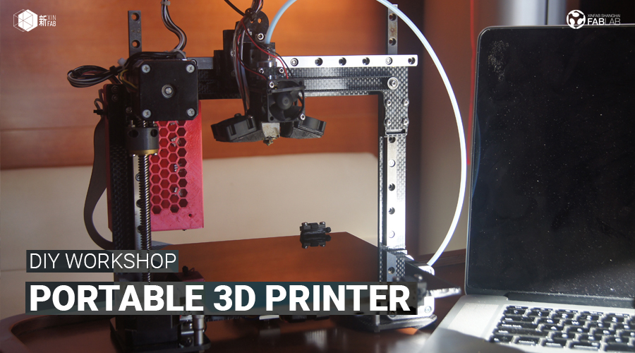
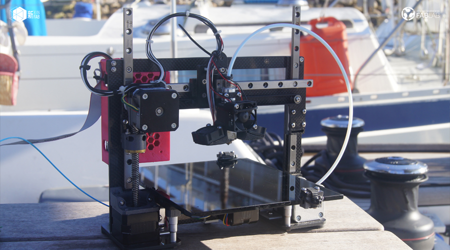
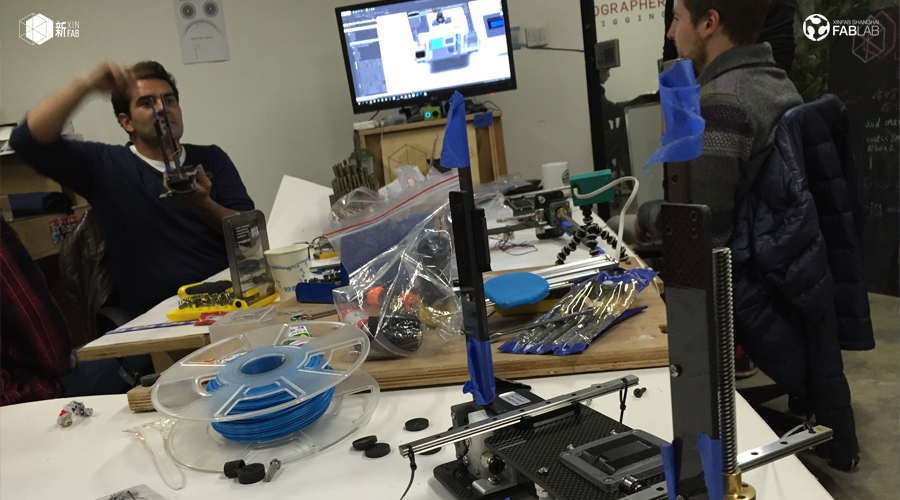
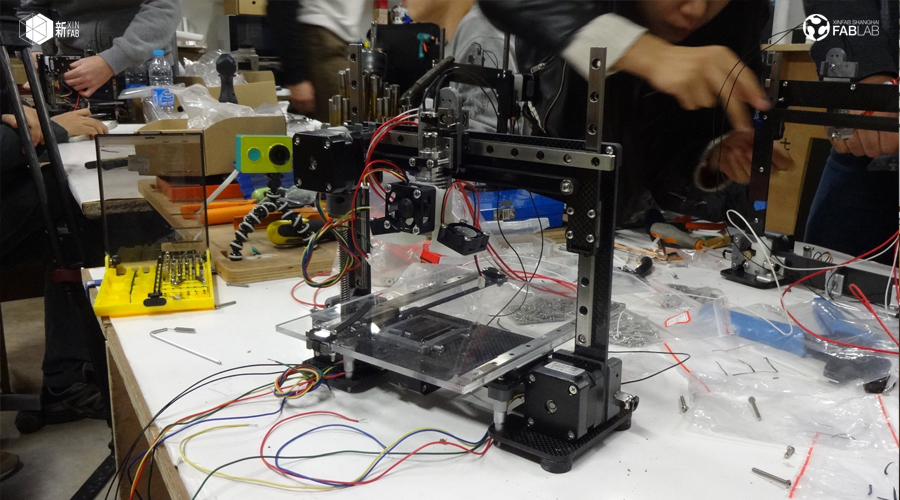
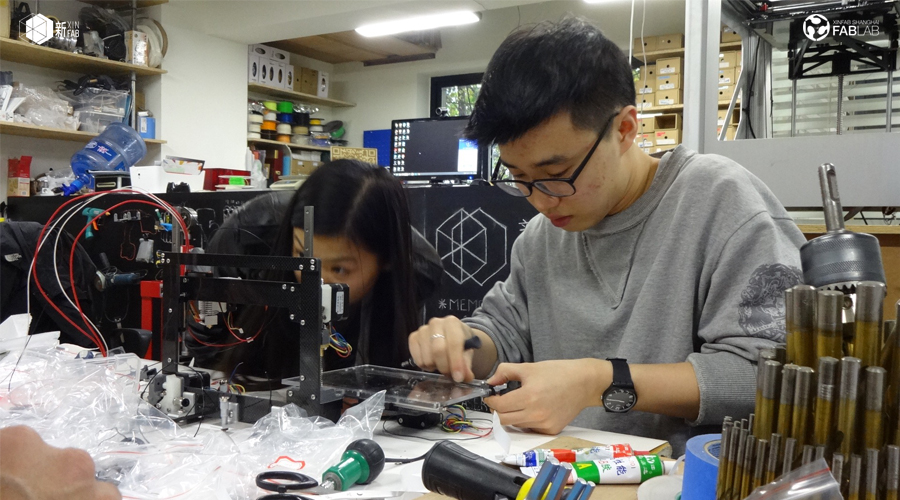

WORKSHOP
PRESALE: DIY PORTABLE 3D PRINTER WITH LUCIO (XINFAB'S FOUNDER)

When:November (date TDB) - 2 days workshop
Where: Xinfab - Kangding East Rd, Lane 45, Building no.5, Room 102, Jing'an District
Price: 4900 RMB (Carbon Fiber) OR 3900 RMB (Wood or Acrylic) *+700 RMB if you wanna build it with a partner
Have you ever thought about building your own 3D printer but you don't know how to get started? In this weekend workshop you will build a portable 3D printer and learn the basics of 3D printing with Lucio, the founder of XinFab!
Plus, your printer is a portable one that you can take anywhere with you.
Aside from taking your newest pet for a walk, you will learn some key maker skills. After all, building a machine is the best way to understand how machines work by far! After the workshop, you can become a 3D printing leader in your district, small business, xiaoqu, or basement! This workshop is a unique chance to become a self sufficient 3D printing master in just two days.
No previous experience in electronics or 3D printing is required.
** Because we have to order drone parts ahead of time, you MUST pre-pay or you'll lose your spot! **
Things you should bring:
// Your lunch! (We sell drinks and we have water but food is on you)
// Your passion, curiosity, and questions
Price includes:
_Portable 3D printer kit
_2 days of 3D Printer assembly
_Instructions
_3D printer tool kit
_1kg Reel of PLA Plastic
_SD card with spare parts
_models
_firmware file
_complete BOM list
_1 month Xinfab membership (180 RMB worth of credits for using our lab)




WORKSHOP SCHEDULE
// DAY 1: BUILD IT
_Introduction to 3D printing
_Start assembling your printer
// DAY 2: PRINT IT
_Finish assembling your printer
_Mechanical systems test
_Print calibration part
_First Print!
_3D Printer operation skills:
.Cura – G-code Generator – Basics
.The critical first layer
.Bed leveling techniques
.Thingiverse – access STL files
.Limitations of a 3D printer
.Part feature optimization
.Utilizing support material
.Open source 3D printer resources
.RepRap – 3D printing community
///////////////////////////////////
HOW TO SIGN UP
Pre-book your spot by sending us an email to info@xinfab.com. As soon as we have the final date for this workshop, we will get in touch with you and let you know how you can sign up.
///////////////////////////////////
ABOUT THE TEACHER

Lucio Pentagna is the founder of Xinfab. An allround maker and 3d printer specialist, Lucio is an entrepreneur, lawyer, CEO, sailor and farmer. He started opening up machines and building new ones from a very early age. Aside from making drones, 3D printers, CNCs and all sorts of electronics, he also set up the entire computer network of one of the companies he used to run when he was only 18 (and back when nobody knew how to do that) and most recently built his own house (!!) in Portugal. Lucio moved from Brazil to Shanghai five years ago and found the fablab, though he now lives in Portugal with his wife and three kids. From time to time he comes back to Shanghai to pay Xinfab a visit and build cool things for us here.